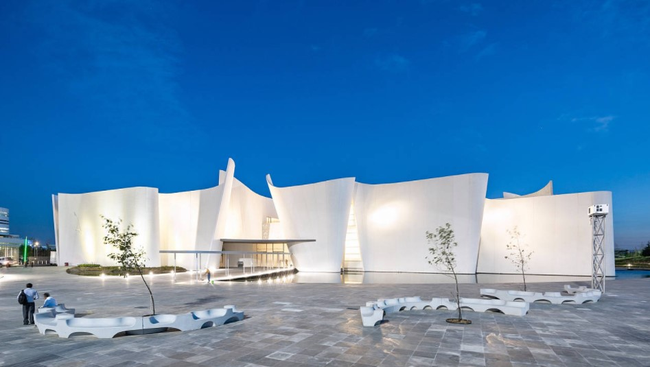

Puebla
Es famosa por su tradición gastronómica, su arquitectura colonial y su cerámica. Los azulejos pintados de talavera se producen en la localidad y adornan muchos de sus edificios. La catedral de Puebla, de estilo renacentista, tiene un campanario de gran altura con vistas al Zócalo, la plaza central.

Algunos monumentos importantes del estado de Puebla son:
Museo Amparo
Museo Internacional del Barroco
San Pedro Museo de Arte
Museo Casa del Titere
Pero especificamente les hablaremos de uno en especial:
MUSEO INTERNACIONAL DEL BARROCO
Es un museo de arte barroco diseñado por el arquitecto japonés Toyo Itō y localizado en Puebla de Zaragoza, Puebla, México. Fue inaugurado el 4 de febrero del 2016 por el gobernador del estado Rafael Moreno Valle.
